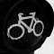
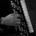

|
On the road, h 09:00
È passata oramai un'ora dalla ns partenza.
Assimilato l'entusiasmo gli animi iniziano a modellarsi sui ritmi della giornata appena iniziata.
Sono passate da poco le 9, i Morcheeba riempiono l'abitacolo. Josto seduto accanto a davide è il primo a precipitare nel sonno.
Suonano i Morcheeba.
Davide impeccabile scandisce i tempi alternando i ritmi con sapienti cambi di musica.
S'affaccia il sole, tutto si fa più reale. Ora possiamo guardarci in faccia da compagni di viaggio.
Già, questa non è una vacanza, questo è un viaggio. On the road, h 09:16
Siamo a Verona, inizia l'autostrada. Josto ha un breve scatto di vitalità.
On the road, h 09:19
Morsi di fame, sonnolenza, risata di Davide, Morcheeba.
• SMS, h 12:31
On the road, h 12:41
Ancora in Italia. Pausa rigeneratrice, cibo, Gatorade.
Suona Mezzanine, il traffico s'è fatto più scorrevole ma sempre facilmente rallentabile.
Questione di nick.
Targa 440 dopo 4 ore e 40 minuti di viaggio.
Davide un anello nuovo di una catena sempre in mutazione.
Quanti biondi! Troppi e noiosi...
Trentino.
Ho provato l'ebbrezza delle vene retrattili.
Monaco, h 18:30
SMS di beatrice:
"... ve lo porgerà una ragazza dalle labbra viola. Siate cordiali con lei e... BP"
Monaco, h 21:38
SMS di shalom:
"Ehi, buon viaggio! Un cyber bacio agli acidi-amici :-) shalom"
• SMS, h 21:52
Monaco, h 22:20
Josto:
«Ho come l'impressione che i tedeschi siano più tedeschi di quanto i francesi siano francesi»
Monaco, h 01:10
(...)
Nell'avviarci verso il centro storico di Monaco, superati da abili (e parecchio invidiati) rollers, siamo stati raggiunti da splendide note. Aleggiano nell'aria spandendosi con delicatezza. Fisarmonica, Bach, Toccata e Fuga.
Abbiamo seguito la forza di quella musica, ci siamo persi, incantati e commossi, nel seguire le emozioni che il musicista ci stava donando.
Josto rannicchiato contro una parete ha colpito lo sguardo sempre attento di Davide. Un bel ritratto, ne sono certo.
L'atmosfera era davvero carica di emozioni, tanto da toglierci parola e sorrisi, il tempo si è fermato lasciandoci al cospetto del genio e della bellezza. Ricordo con chiarezza quella sensazione di leggerezza, quei lievi capogiri e la debolezza delle gambe.
Un momento di nobiltà e sensibilità tedesca.
La stanchezza mi spezza i pensieri... vorrei scrivere dell'arte e della musica colta per le vie di Monaco, o delle sapienti rollate dei suoi abitanti.
Vorrei capire quell'impressione di *pulizia mentale* che ho recepito dagli abitanti di questa città. Mi sbaglio?
Chiudo con un accenno a kebab, birra e mojito per il viale in festa.
Stranieri in terra straniera... a domani.
|